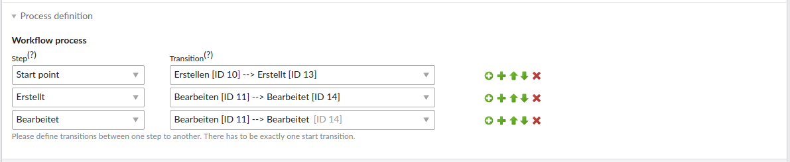

Quick Start
Die Quick Start Anleitung zeigt exemplarisch anhand Für News (tl_news) wie man für eine beliebige DCA-basierte Tabelle den Standard-Workflow aktivieren kann.
Installation
netzmacht/contao-workflow steht als Contao-Bundle zur Verfügung. Die Installation erfolgt über Composer/Contao Manager.
$ php composer.phar install netzmacht/contao-workflow:^2.0
Konfiguration
netzmacht/contao-workflow erlaubt es beliebige Workflowtypen zu definieren und liefert einen generischen Workflowtyp Default mit.
Möchte man diesen für eine DCA-basierte Tabelle Tabelle aktivieren, ist eine Konfiguration in der app/config/config.yml notwendig. Mittels folgenden Konsolenbefehl erhält man eine Übersicht aller der möglichen Konfigurationsoptionen:
$ vendor/bin/contao-console config:dump-reference netzmacht_contao_workflow
Für tl_news sieht der Beitrag wie folgt aus:
netzmacht_contao_workflow:
default_type:
tl_news:
palettes: ['default']
operation: first
submit_buttons: true
Damit die Konfiguration angewandt wird, muss der Cache neu aufgebaut werden:
$ vendor/bin/contao-console cache:warmup
Install-Tool aufrufen
Nun lässt sich das Install-Tool aufrufen. Es müssen zwei neue Datenbankfelder angelegt werden:

Workflow anlegen
Nun ist alles vorbereitet, sodass ein Workflow angelegt werden kann. Dazu sind folgende Schritte zu beachten:
- Workflow anlegen
- Typ Default auswählen
- Provider name tl_news auswählen
- Der Prozess wird erst im Nachgang definiert
- Actions definieren
- Neue Action Note anlegen
- Schritte definieren
- Schritt Erstellt anlegen
- Schritt Bearbeitet anlegen
- Transitions definieren
- Transition Erstellen anlegen
- Als Ziel den Schritt Erstellt auswählen
- Transition aktivieren
- Transition Bearbeiten anlegen
- Als Ziel den Schritt Bearbeitet auswählen
- Action Notiz auswählen
- Transition aktivieren
- Transition Erstellen anlegen
- Prozess definieren
- Auf Workflow bearbeiten gehen
- Prozess Start point => Erstellen anlegen
- Prozess Erstellt => Bearbeiten anlegen
- Prozess Bearbeitet => Bearbeiten anlegen
Der Prozess ist nun angelegt und sollte wie folgt aussehen:

Workflow zuweisen
Nun kann der Workflow beim Bearbeiten einer News ausgewählt werden. Dann der Konfiguration submit_buttons: true stehen
nun die Transitions als zusätzliche Submitbuttons zur Verfügung.